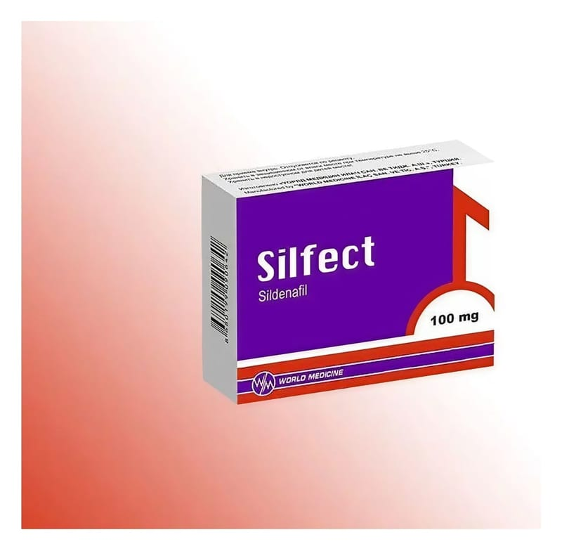

Silfect 100 mg Film Tablet ,4 Adet

Ne için kullanılır
KT · Bölüm 1• SİLFECT
film kaplı tabletler 100 mg sildenafil içeren, mavi renkli, kare film kaplı tablet olarak 2,4 ve 8 tablet içeren ambalajlar halinde sunulmaktadır. • SİLFECT fosfodiesteraz tip 5 (PDE5) inhibitörleri adı verilen bir ilaç grubuna dahildir. Penisteki kan damarlarının gevşemesine yardımcı olarak cinsel uyarı sırasında kanın penise akımını sağlamak suretiyle etki gösterir. • SİLFECT
sadece cinsel yoldan uyarılmanız durumunda doğal yolla sertleşme (ereksiyon) oluşmasına yardım eder. Sertleşme sorununuz yoksa SİLFECT
kullanmamalısınız. Sertleşme sorunu, bir erkekte cinsel aktivite için gerekli, penis sertleşmesinin sağlanamaması veya sertliğin korunamamasıdır. SİLFECT
kadınların kullanımı için değildir.